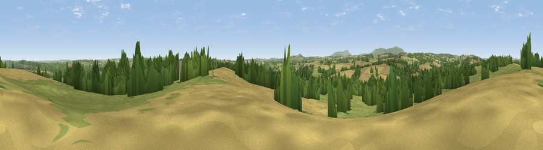

Viewpoint near Chelmarsh
#14877 in England · top 33% of its area beats it · near ChelmarshWhere it is
The exact computed spot (SO 71575 88175). Click the marker for map links.
The view, rendered

A 360° render of this exact spot computed from the terrain model, tree cover and land cover — summer colours, afternoon light, calibrated against photographs of famous viewpoints. Real trees, hedges and buildings will differ in detail.
The panorama
Grey silhouette: terrain skyline in each direction (720 bearings, Earth curvature and refraction included). Dashed green: skyline with trees (+15 m) and buildings (+8 m) as obstacles. Blue strip: how far the ground is visible on each bearing.
Where the view opens
Wedge length = distance to the farthest visible ground on that bearing (vegetation-aware). Rings at 10, 25 and 50 km.
What fills the view
40% grassland · 33% cropland · 24% woodland · 2% built-up ·
Angular shares of the visible panorama (visual magnitude), not map area. Landscape diversity 0.51 (0–1 Shannon).
Key numbers
More beautiful places nearby
The staircase of upgrades: each row has a higher view potential than everything closer. Driving times are estimates from straight-line distance, calibrated against real road routing — check an actual route before setting out.
| Place | Direction | Drive | Score |
|---|---|---|---|
| Viewpoint near Hampton Loade | SE · 3 km | ~7 min | 59.6 |
| Viewpoint near Oldbury | NW · 6 km | ~13 min | 60.3 |
| Viewpoint near Chorley | SSW · 7 km | ~14 min | 60.6 |
| Knowle Hill | SSW · 7 km | ~14 min | 75.5 |
| Viewpoint near Abdon | W · 12 km | ~23 min | 82.6 |
| Viewpoint near Burwarton | WSW · 12 km | ~23 min | 83.4 |
| Titterstone Clee | SW · 16 km | ~28 min | 83.8 |
| Viewpoint near Little Wenlock | NNW · 22 km | ~36 min | 86.6 |
52.49074, -2.42006 · source: screening · position refined by local search. Computed location — check access rights before visiting.